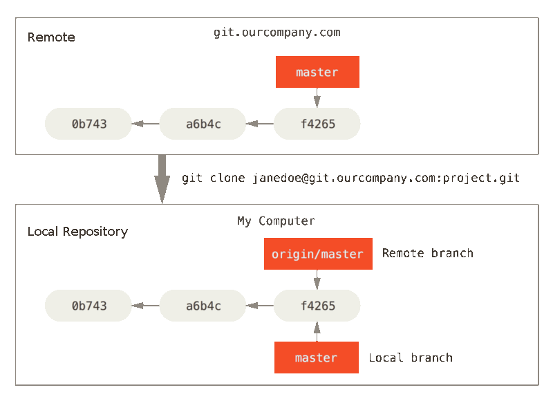

Repositories and Branches
Remote Repository
- Repository installed on one remote server, contains one or multiple branches or tags
Local Repository
- Repository installed on local computer, can be linked with an Remote Repository
Branch
- A development line, a bach of changes for a version or feature
Tag
- A branch that will not change in the future (Release version)
Remote Branch
- A development line from one Remote Repository
Local Branch
- A development line from Local Repository, can be linked to an Remote Branch
Usual the remote branch is refered with name origin/master where master is the branch name.
